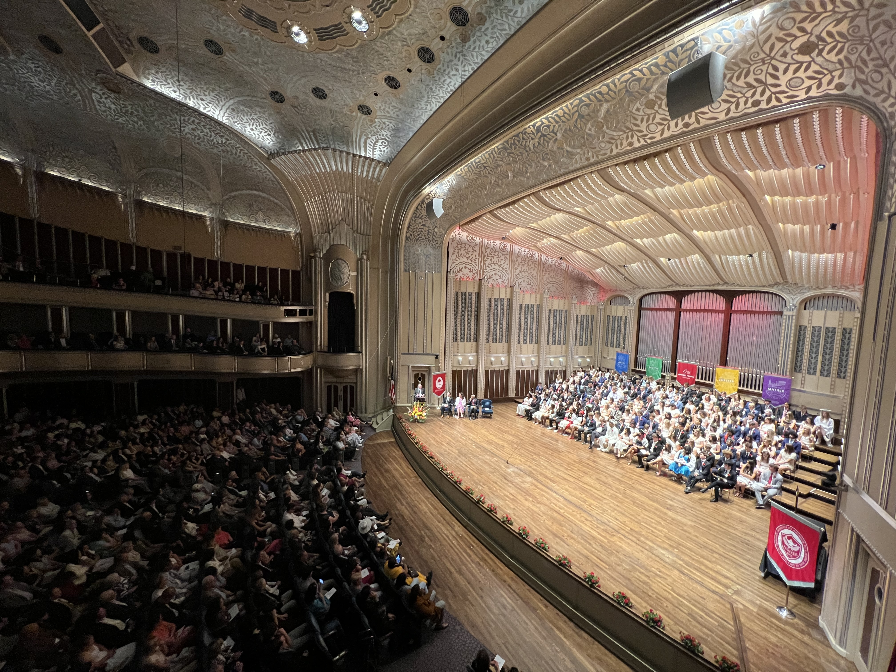
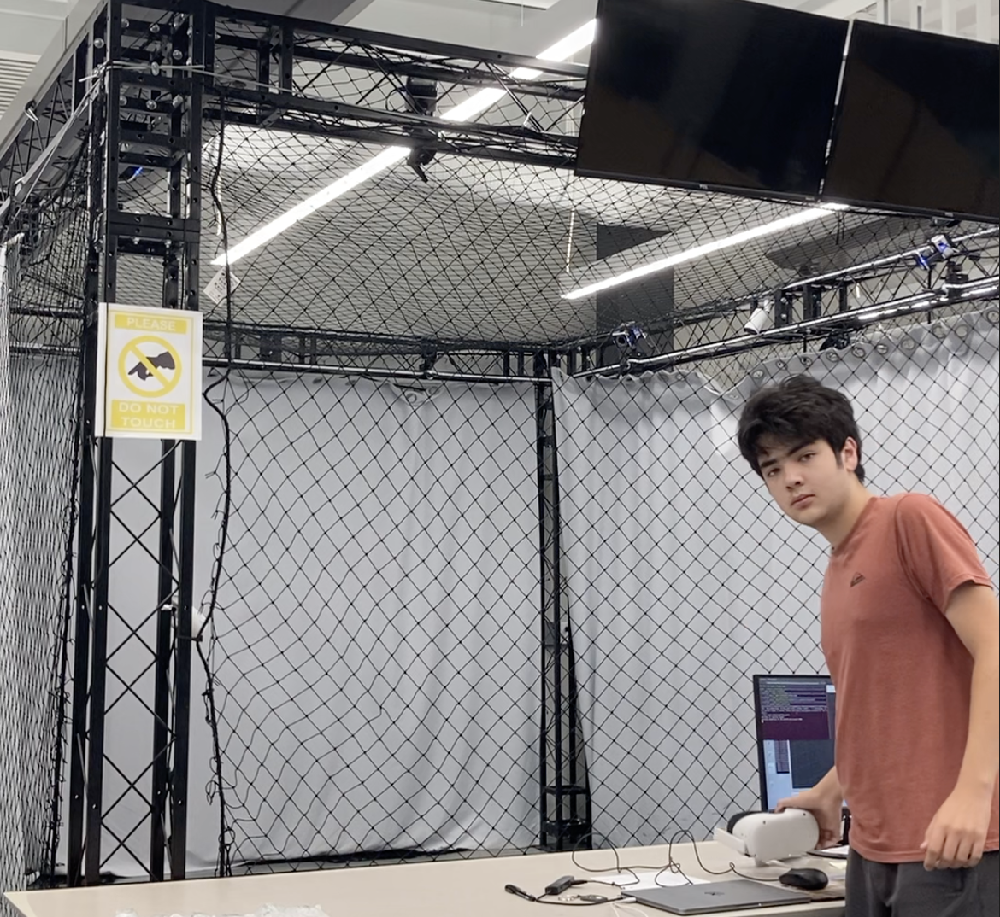
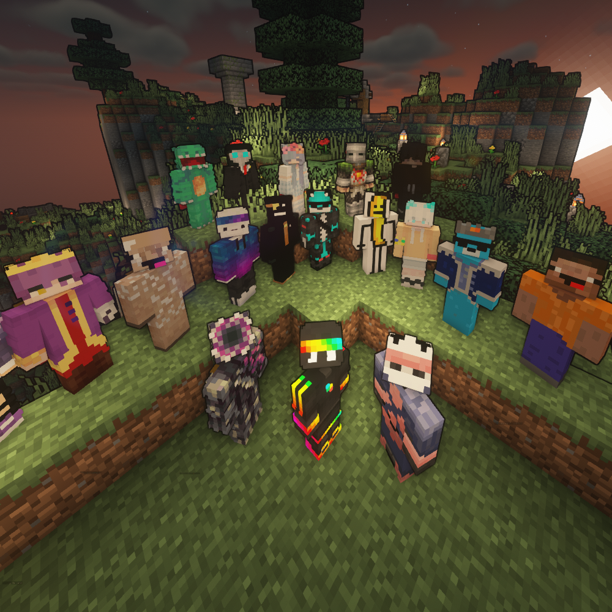
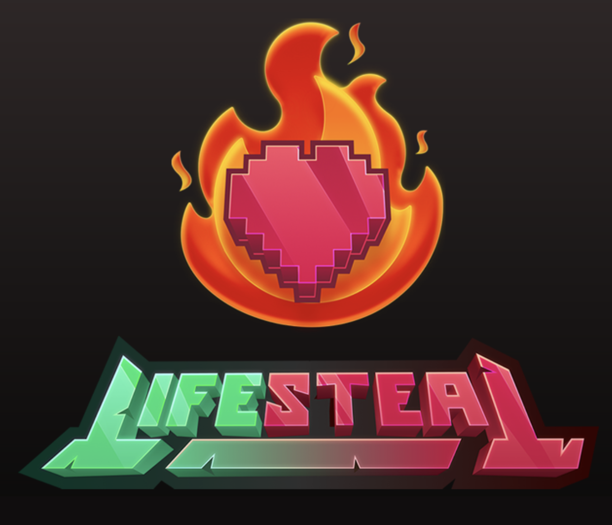
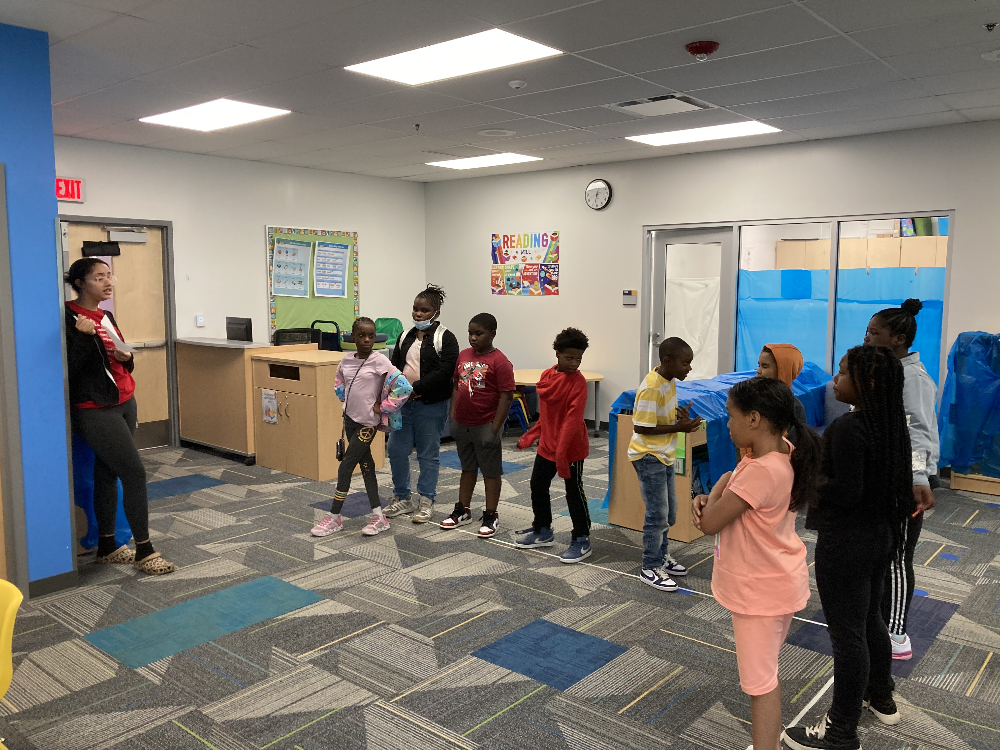
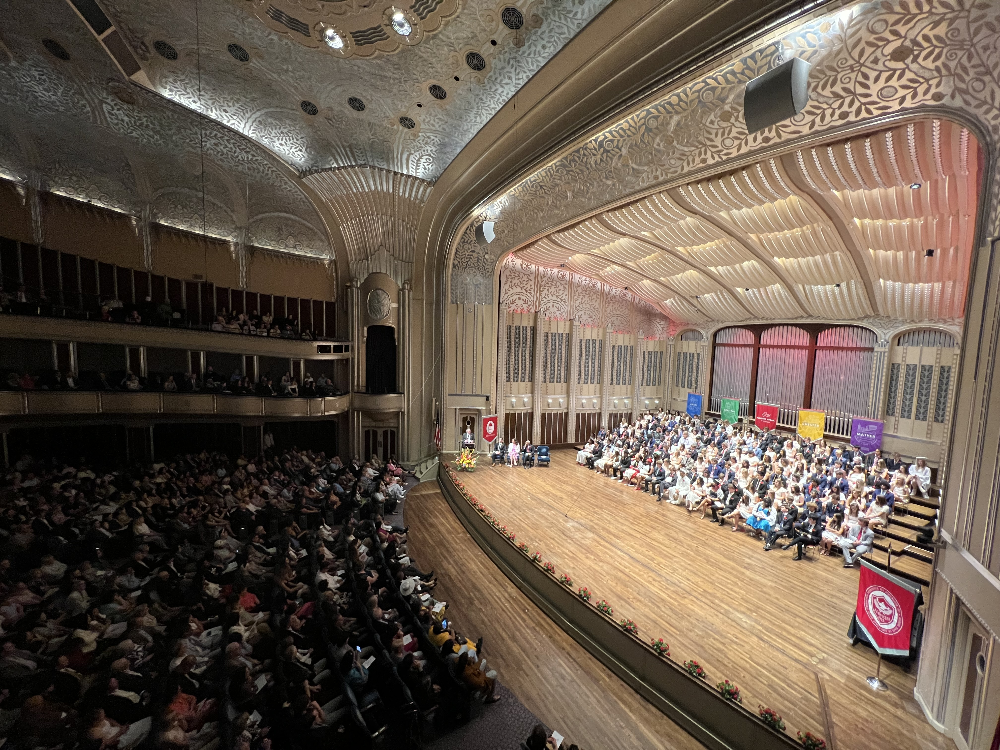
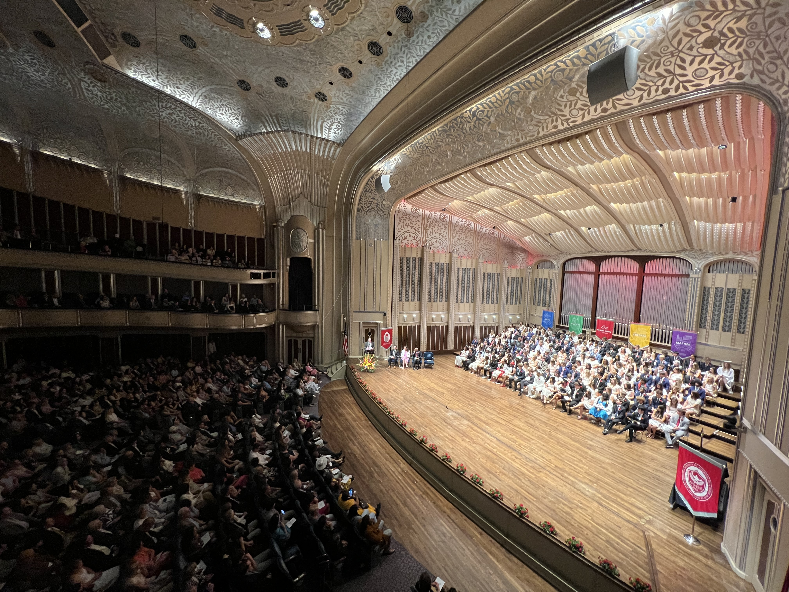
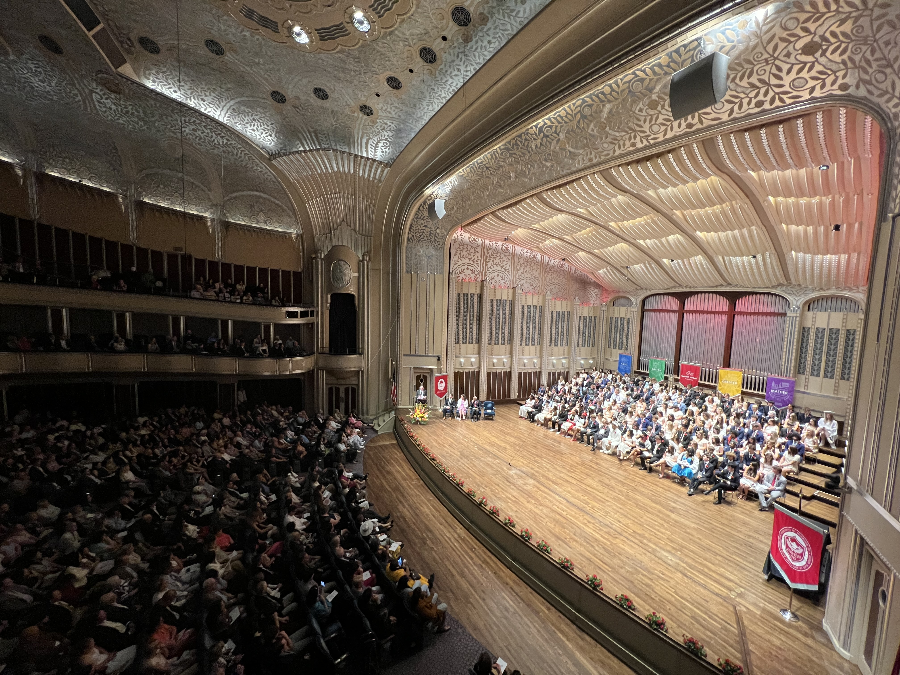
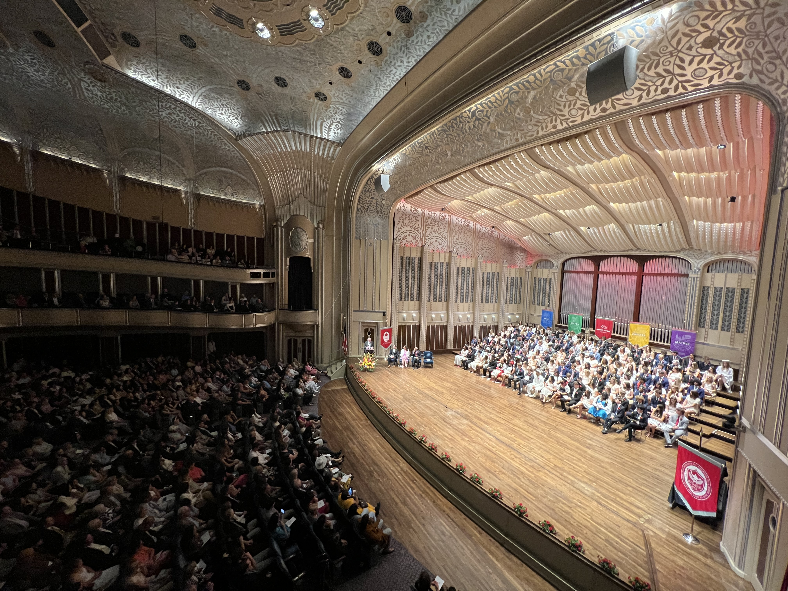

Voted by my peers to be commencement speaker for the founding class of the Mastery School of Hawken.

Cognitive Robotics at Kent State! I Developed gesture based control methods for drone swarms, and drafted an IEEE paper on the process.
 
Administrator for the SpokeMC 100 player civilization events. 15,000 players, 9.6 million views and counting.

Youngest educator ever hired by TechCORPS, teaching robotics in outreach programs around Cleveland.
 


